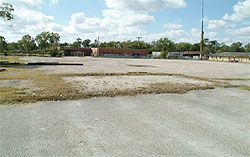

Las Villas De Magnolia
A senior housing initiative in Houston’s Magnolia neighborhood.
- Proposed homes
- 116
- Original site
- 3.5 acres
AAMA-CDC acquired a 3.5-acre parcel at Harrisburg and 72nd Streets in Houston’s East End as the proposed site for a 116-unit senior residential center.
The original plans emphasized the neighborhood’s amenities and the need for senior housing. In January 2004, a public meeting brought future neighbors together to discuss the development.
This page documents the original proposal. It does not indicate current construction status or housing availability.
View the public meetingLocation
Harrisburg & 72nd Streets
Houston, Texas
Project history from AAMA-CDC’s original site. For current information, please contact Peter Clementi.

Good communities start with a conversation.
Connect with Peter Clementi about AAMA-CDC, our development work, or opportunities to work together.